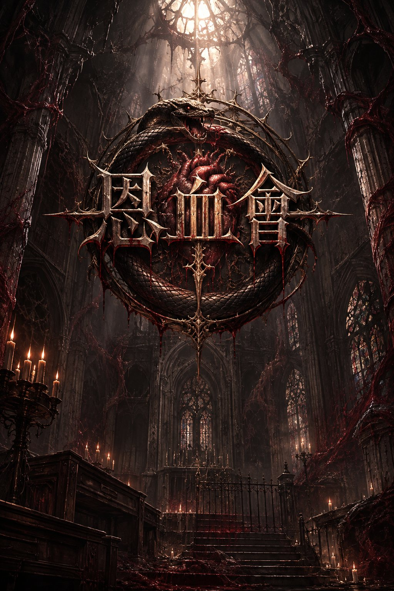
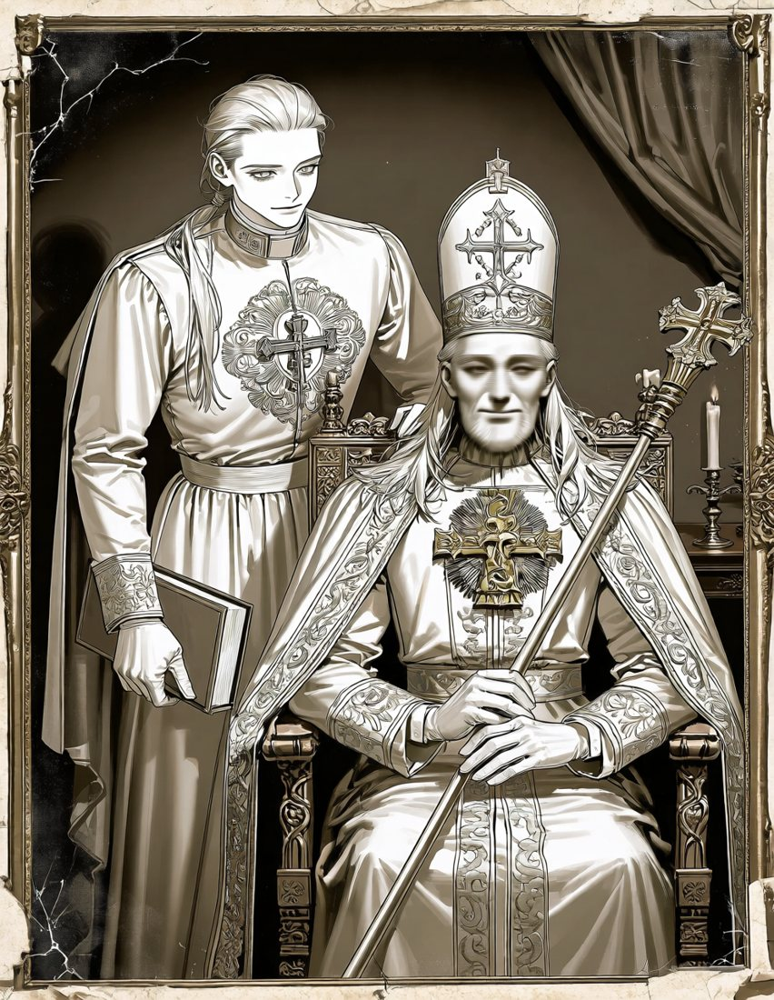
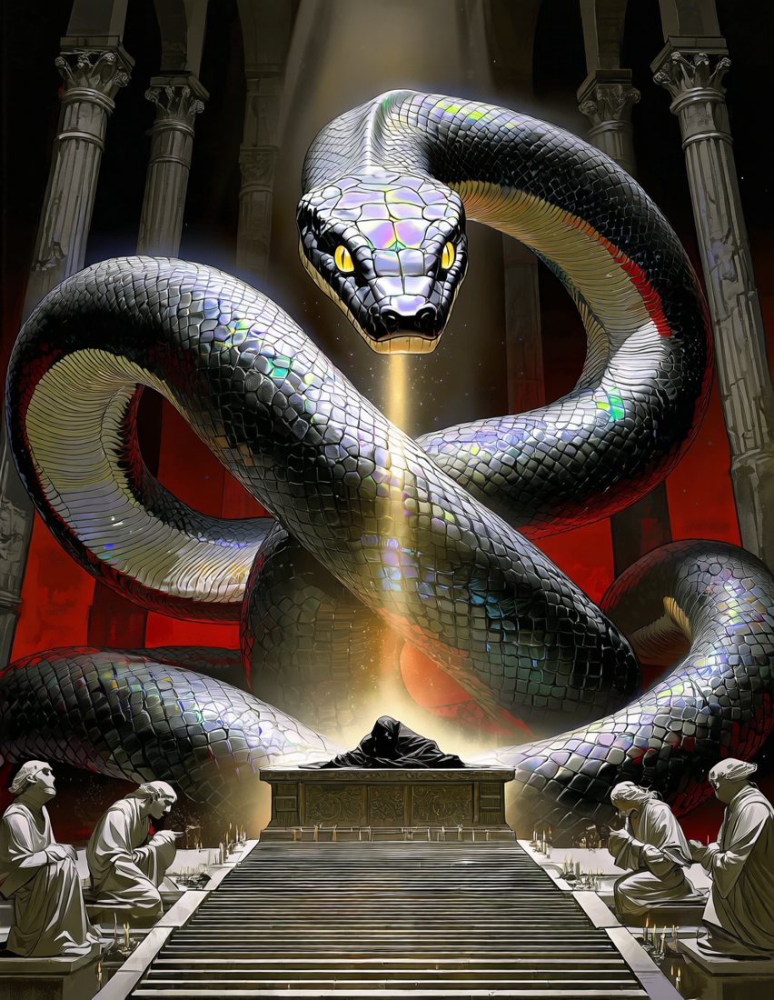

五十年前，恩血會被王國剿滅，灰麥大教堂從此荒廢。
但教團崇拜的再生之神，從來沒有死。
傳說，只要帶著封存神肉的聖骸匣抵達聖堂最深處，就能實現一個願望。也有人說，教團三百年來收的獻金，至今仍埋在地底。
你為了自己的理由，踏進了這座長滿溫熱肉根的廢墟。
灰麥平原饑荒遍野。一名修士在教堂地底向古神「維格萊斯」祈求，獲得了再生的祝福——受祝者的斷肢，會重新長回來。
人們割下那重生的血肉分食，熬過了饑荒。
獻肉即是最高的信仰。
此後，恩血會抓捕異教徒、施以洗禮，製成可以反覆割取的「聖餐器皿」。
惡行敗露，王國派軍圍剿，信徒盡數被屠，聖堂遭鐵鏈封死。這件事登上報紙，漸漸成了地方怪談。
煤氣燈、左輪槍與照相機的年代，科學正逐漸取代信仰。鐵路廢線後，灰麥鎮少有外人。
可是聖堂牆縫裡，爬滿溫熱搏動的肉色根系；地底深處，仍傳來心跳般的悶響。凡死於聖堂者，都被神力重新長了回來。

從瓦礫堆裡翻出的一張照片，玻璃早已碎裂。坐在高背椅上的老人身披大司祭的祭袍，手握十字權杖，神情慈祥；身旁站著一名年輕的教士，懷裡抱著教典。
照片背面原本寫著兩人的名字，如今已被暗紅的血漬暈開。
坊間流傳：帶著聖骸匣抵達最深處的神眠之所，便能實現一個願望。但匣中之物被吃掉越多，願望就越容易被神扭曲。

守護沉睡之神的巨蛇，盤繞在神眠之所四周，首尾相銜。黑色鱗片在光下泛出油膜般的光澤——那是五彩斑斕的黑。
被生物抓住、被塞勒斯修復、吃下聖餐、被洗禮、長時間滯留地底時上升；回到地面休息一次，降一階。越高，越認同教義。